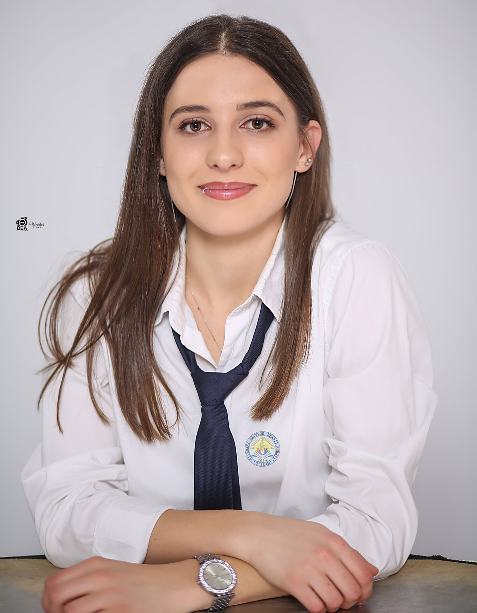

Who is Bore Haziri?
My name is Bore Haziri, and I was born on January 2, 2004, in Gjilan. I am a dedicated and goal-oriented individual with a passion for growth and development. I thrive in environments that challenge me to think critically, solve problems, and collaborate effectively with others. With a strong foundation in both analytical and technical skills, I am committed to continuous learning and adapting to new opportunities. I am eager to contribute my knowledge, creativity, and determination to achieve success in any endeavor I undertake.